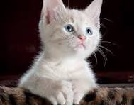

Кошки
Кошка, или домашняя кошка[1]
— домашнее животное, одно из наиболее популярных «животных-компаньонов»[2].

По окрасу кошки подразделяются на:
- Табби — напоминает окрас диких кошек. Встречается в виде узких полос, мелких пятен по всему корпусу или особому рисунку
- Одноцветный или иначе сплошной окрас, когда цвет шерсти одинаков по всему телу кошки.
- Дымчатый окрас, когда окрашены только кончики волос шерсти.
- Колорпойнт или иначе акромеланические окрасы. Для этой группы окрасов характерны слабо окрашенное, светлое (от белого до кремового) тело и более тёмные лапы, хвост, морда и уши.
- Би-колорные — на шёрстном покрове по всему корпусу на белом фоне расположенные окрашенные пятна
без определённого соотношения.
- Черепаховый окрас — кошка раскрашена сочетаниями чёрного (голубого) и рыжего (кремового) цветов.
Для получения дополнительной информации перейдите по ссылке